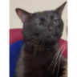

Curriculum vitae

Jose Alfredo Salgado
Altamente observador y estratégico.
Perfil Profesional
Soy un solucionador de problemas tecnológico con un toque de magia financiera. Me encanta convertir los datos en historias y los problemas en oportunidades. Si tu empresa necesita un superhéroe digital, ¡yo soy tu persona!"
Experiencias:
- En mi anterior trabajo, domesticé una base de datos salvaje y enseñé a una hoja de cálculo a hacer trucos imposibles.
- Optimicé procesos, salvé proyectos del desastre y convertí datos aburridos en informes que hacían bailar a los clientes.
Habilidades
- Excel: Nivel Jedi. PowerPoint: Maestro de la persuasión. Té: Adicto certificado.
- Soy un ninja de la ciberseguridad, un mago de los números y un explorador del mundo digital.
Referencias
- Pregúntale a mi gato, sabe más de mí que nadie. O si lo prefieres, puedo darte una galleta de la fortuna personalizada con una referencia.

Conoce mas acerca de mi
Portafolio